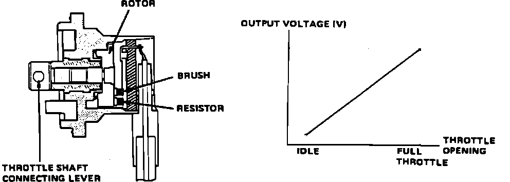

Throttle Position Sensor: Description and Operation
Throttle Angle Sensor Operation:

The throttle angle sensor is mounted on and driven by the throttle body unit. The sensor is a variable resistor (potentiometer) that is used by the ECU to detect throttle movement and position. A 5 volt reference signal is applied from ECU pin C13 and a ground signal on pin C14. When the throttle is opened the sensor resistance changes which is read as a varying voltage signal at pin C7. At idle position the sensor voltage is approx. 0.5V and approx. 4.5 V at full throttle.